Invoices in. Costs right.
Books clean.
An AI-assisted flow for Toast Inventory that takes a supplier invoice from a crumpled paper at the back door to a correct bill in QuickBooks, and only asks a person about the lines that need one.
Invoices are still keyed in or re-checked by hand, so stock, costs and the books drift apart and margin losses show up weeks late.
Operators don’t need AI that’s “accurate”. They need to know which lines to trust, so they stop re-checking all of them.
Toast IQ reads everything, says how sure it is in plain words, and asks a person only about the exceptions. People always approve.
Time from invoice received to bill in the books, and the share of lines that needed no human touch.

Built around what the role asks for.
Toast didn’t ask for an assignment. I made one before our conversation to show how I’d think in this role: one journey, taken end to end, mapped to what the inventory team is building for restaurants, retail and everything in between.
Two cases came in.
The invoice said one.
Monday, 11 PM. Maya is approving the week’s invoices for Harbor & Vine. On the Sysco paper, the receiver wrote a “2” over the printed “1” for avocados. Chicken breast is a code she’s never seen. And Baldor quietly raised the avocado price 18%. She has 48 more invoices to go, so she approves what was typed in.
She runs a hybrid store: a market and a kitchen. The same Sysco delivery stocks the shelf and the line, and each line has to land in the right place: stock, recipe cost and the right account in QuickBooks.
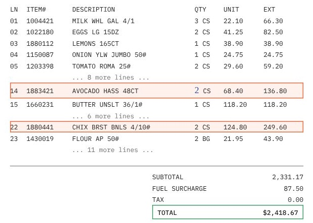
Maya Rodriguez
“I just need to know the numbers are right without reading every line at 11 PM.”
Maya, approving invoices after closeInvoices a two-location GM handles, from Sysco, US Foods, produce, beer and wine suppliers.
Weekly keying and re-checking at ~4 minutes an invoice, usually after close.
How long a quiet supplier price rise can go unnoticed before it shows up in margin.
Scenario figures used to frame the design, not measured data. Validating them with operators is the first thing I’d do.
Everyone finds out at month-end.
The receiver, the GM, the bookkeeper and the owner all learn a number was wrong long after it was cheap to fix.
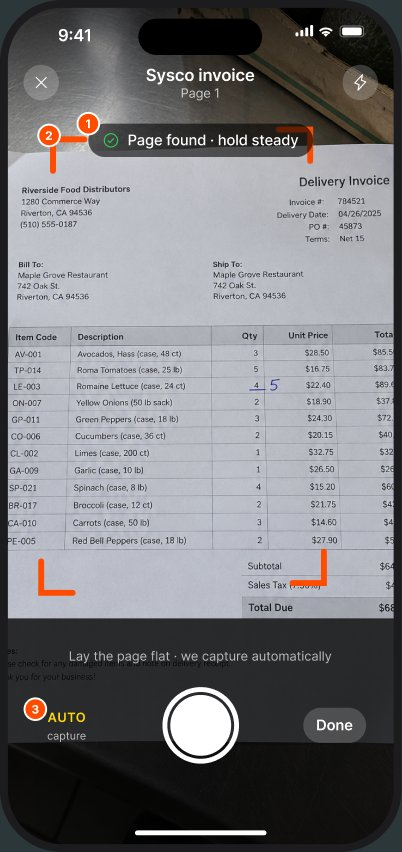
Driver’s already gone.
Re-checked every line.
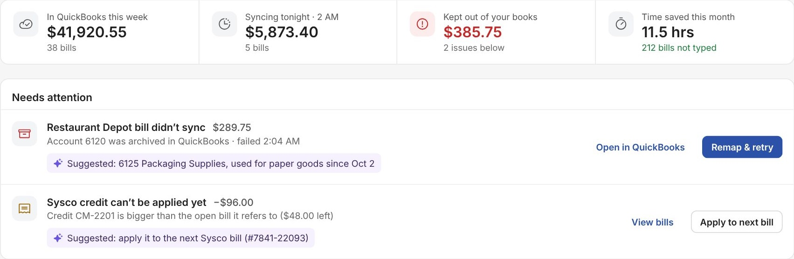
Calls the GM.
Margin already gone.
Why trust is the core problem
Every back-office tool promises speed. Only here is a fast answer worthless if you can’t tell which lines are right.
“Which of these lines can I trust?”
The most expensive failure
A misread pack size or price quietly inflates food cost, then gets posted to the books.
It’s why automation fails
If AI looks equally sure about everything, people re-check everything and save nothing.
It blocks every other decision
Approving, paying and syncing only happen once someone trusts the numbers.
Other problems operators face
- Every supplier names items differently→ Item mappings, learned once and reused
- Pack sizes and units don’t match recipes→ Converted to the recipe unit, like $/lb
- Invoices arrive by email, EDI, scan and upload→ One inbox, with duplicate checks
- Price rises go unnoticed→ Margin impact shown before approval
- Sync fails silently→ A plain reason and a suggested fix
- Receivers shouldn’t approve bills→ Roles: scan, approve, fix sync
Three people touch every invoice. They want different things from it.
Each one has their own job and permissions. You can switch between them in the prototype from the ⓘ note in the menu.
Maya Rodriguez
General Manager · South End & Back Bay“I just need to know the numbers are right without reading every line at 11 PM.”
Jordan Lee
Receiver · South End“Is it all here? He’s in a hurry.”
Priya Shah
Bookkeeper · All locations“Why is this bill posted twice, and where did the paper goods go?”
The same engine serves restaurants, retail and hybrid stores like Maya’s market and kitchen. See how it changes by store type →
A week of invoices, from the back door to the books.
Three people, six stages. The red line is how it feels today; the green line is how it feels with this design. The lowest points today, reviewing at 11 PM and the month-end sync, are where the design does the most.
Swipe sideways to see all six stages →
↓ stressed
“Just let the AI read it.”
That was the first idea. Most tools stop there: read the invoice, show a confidence score. It sounds safe, until you try it as Maya.
- 1Toast reads all 34 Sysco lines
- 2Every line says “High · 98%”
- 3Maya can’t tell which lines are the 2%
- 4Maya re-checks all 34 anyway
Sysco Boston · 34 lines read
AVOCADO HASS 48CTRead as 1 case · $68.40CHIX BRST BNLS 4/10#Matched to Chicken thighMILK WHL GAL 4/1Whole milk, gallonIt’s equally sure about everything
98% on the wrong line looks exactly like 98% on the right one.
A number she can’t act on
Nobody can act on the difference between 97 and 99.
It reads, but never asks
A handwritten “2” over a printed “1” needs a person, not a guess.
Toast IQ reads everything.
You check only what needs you.
How might we get a supplier invoice into stock, recipe costs and the books correctly, without a person re-checking every line?
01Read everything
- Email, EDI, scans and photos land in one inbox.
- Duplicates are paused so nothing is paid twice.
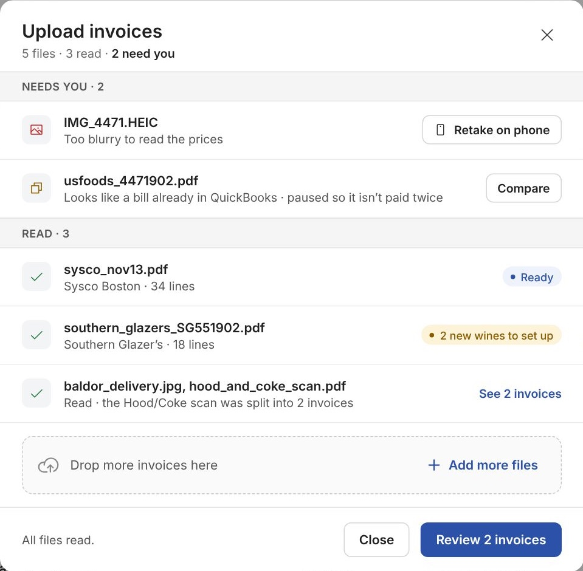
02Ask only what needs a human
- Questions, not codes: “How many avocado cases came in?”
- Each answer shows its money impact.
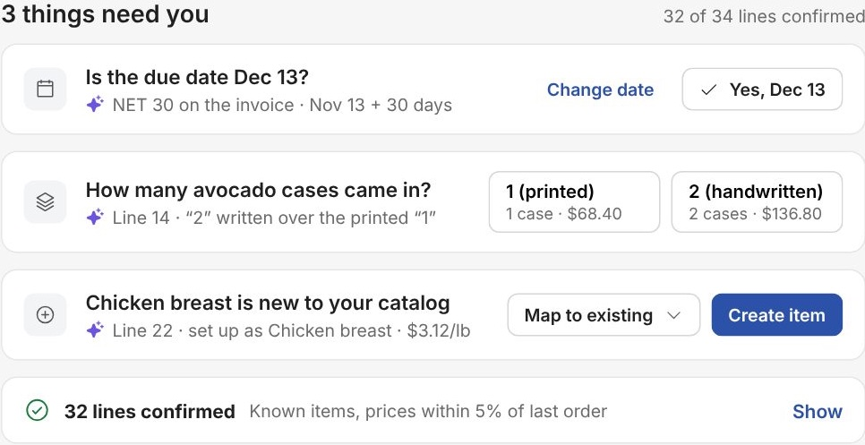
03Show the evidence
- “Exact match · UPC matches”, not “98%”.
- Every flagged line is highlighted on the paper.
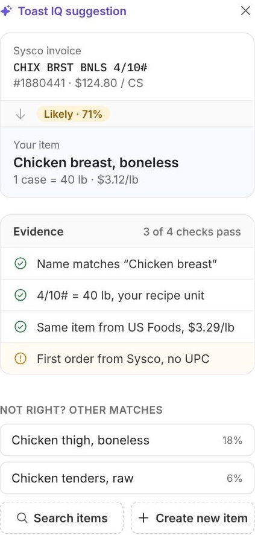
One engine, every kind of store.
Toast serves restaurants, retail and hybrids like a café that sells packaged goods. Invoices look the same; what each line turns into doesn’t. The flow stays the same and the rules change per store. The location switcher shows each store’s type, because it changes which items, units and accounts apply.
Back Bay · Kitchen
Cases and pounds that become recipe costs.
- Pack size → recipe unit: 4/10# = 40 lb · $3.12/lb
- Price rises shown as margin: avocado toast 71% → 66%
South End · Market + Kitchen
One delivery feeds the kitchen and the shelf.
- Each line posts to its own COGS account: Food · Produce vs Retail · Packaged grocery
- New items copied from another store: “Back Bay already sells it”
Wine & spirits
Sold by the bottle, bought by the case.
- Case → bottle: 1 CS = 12 btl, set up once
- Liquor COGS kept apart (5120)
Seaport · Retail
Thousands of SKUs, barcodes and EDI.
- UPC-first matching: “Exact match · UPC matches”
- EDI exact matches skip review; case → each
How I got here
My process wasn’t linear: the inbox structure changed after I critiqued it as the GM at 11 PM.
Reading the brief
Toast’s unified inventory platform. I chose one journey: the invoice.
Domain
How cost flows: invoice → stock → recipe cost → GL account.
Users & roles
GM approves, receiver scans, bookkeeper fixes sync.
Journey
Six stages from the back door to the books, and where each one hurts.
Principles
Five rules, e.g. “ask only what needs a human”.
Information architecture
Lifecycle states; tabs for the jobs, not sections.
↺ Went back: sections duplicated the tabsToast IQ
Reads, matches and suggests. Never approves, pays or posts.
Prototype + metrics
A working prototype with realistic data; time to books as the north star.
Built around the invoice’s life, not around menus.
Every screen answers one question. Inbox: what needs me? Review: is this right? Mappings: will it be right next time? Sync: did it reach the books?
Sections inside “All”
One lifecycle
4 ways in → 1 inbox
Sitemap
- Invoices
- Invoice review
- Item mappings
- Suppliers
- Counts
- Purchase orders
- Accounting sync
- GL mappings
- Sync settings
- Inbox summary
- Reasons on each question
- Mapping evidence
- Ask Toast IQ panel
- GM · reviews and approves
- Receiver · scans on iPhone
- Bookkeeper · fixes sync
Five rules that settled most arguments.
Ask only what needs a human
The screen leads with the question (“How many avocado cases came in?”), not the invoice code.
AI suggests, people approve
Toast IQ never approves, pays or posts. It explains why and says when it isn’t sure.
Confidence in words, not decimals
“Exact match · UPC matches” beats “98%”.
Every number traces back to the paper
Flagged lines highlight on the invoice image; the total check sits next to the approve button.
One colour, one job
Orange is Toast and where you are. Blue is actions. Violet is only Toast IQ. Green, amber and red are only status.
AI reads. People approve.
My test for every AI feature: does it remove a step a person does today, and can they see why it’s right?
Reads, matches, suggests
- Reads invoice headers and line items, including handwriting
- Matches supplier codes to your items and converts pack sizes
- Suggests GL accounts from how your bookkeeper actually posts
- Answers “what’s left before tonight’s sync?” as a live checklist
Decides, pays, guesses silently
- Never approves, pays or posts a bill
- Never hides a low-confidence match behind a green tick
- Declines off-topic questions and points back to what it can do
- Asks a follow-up when a question is vague
Inbox: a summary with a time estimate
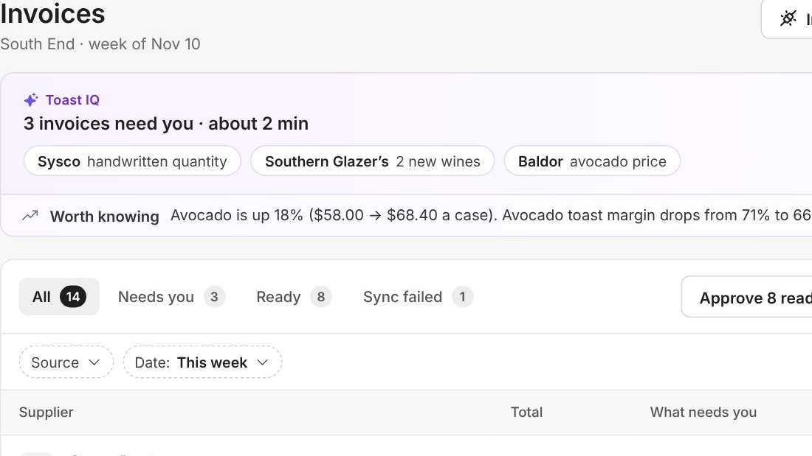
Mappings: evidence, not a score
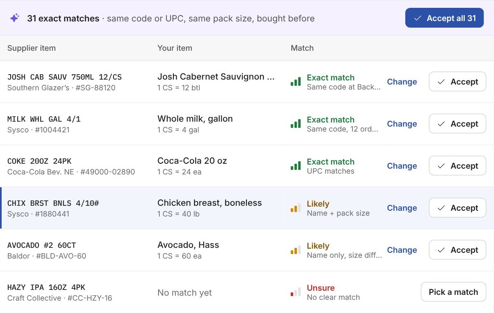
Accounting: a suggested fix
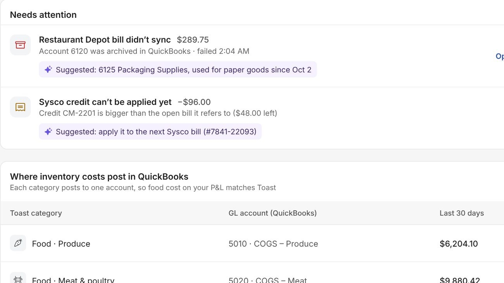
Ask Toast IQ: a checklist, not a chatbot
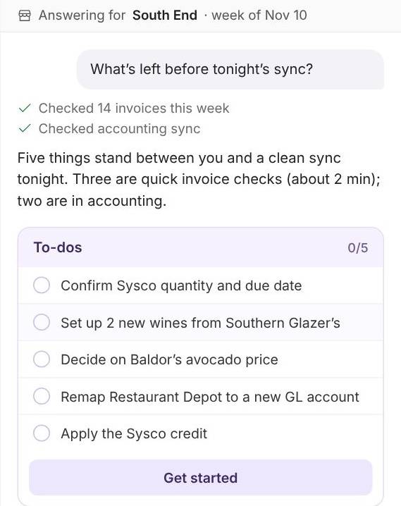
What if Toast IQ isn’t sure?
The promise only works if the interface is honest when the paper is messy. It never fakes a green tick.
Handwriting is over the print
It asks which number, shows both with their cost, and highlights the line on the paper.
The total doesn’t add up
It finds the line under the subtotal (a fuel surcharge) and offers to add it as a delivery fee.
An item is new
Map to an existing item or create one. The mapping is reused on every future invoice.
It’s a duplicate
Paused so it isn’t paid twice, with a side-by-side compare.
The photo is too blurry
“Too blurry to read the prices”, with a one-tap retake on the phone.
The books reject it
Held with a plain reason (account archived) and a suggested account, based on how the books are kept.
Try it as Maya.
Monday after close: 14 invoices this week, 3 need Maya. Follow her through the screens, with Priya picking up the sync in step 04, then click through the same screens in the prototype.
Maya Rodriguez
General Manager · South End & Back Bay“Three suppliers, one handwritten number, and a sync at 2 AM. What actually needs me?”
Scenario used throughout the prototype · Harbor & Vine, week of Nov 10Invoices inbox
Review an invoice

Item mappings

Accounting sync
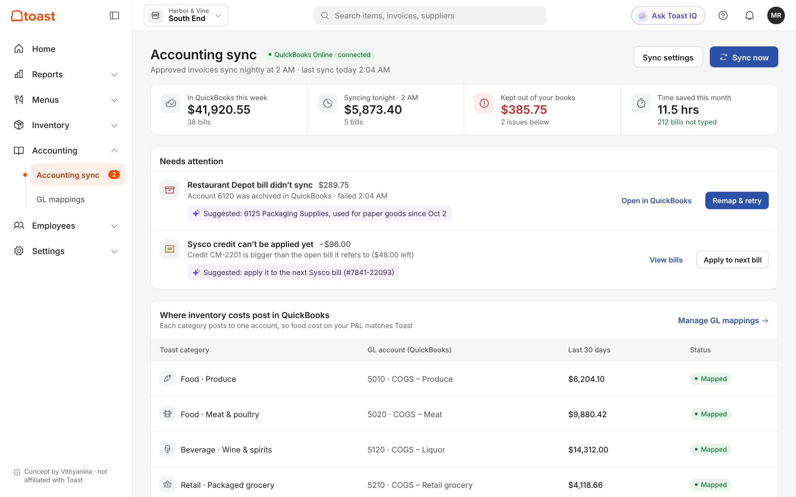
Ask Toast IQ
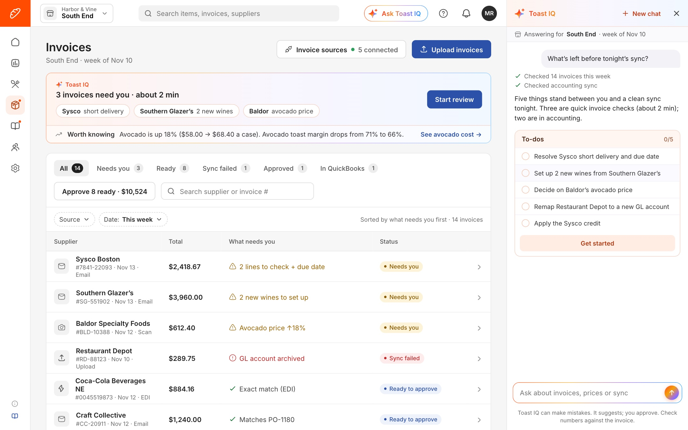
Upload

Same promise, one thumb.
At the back door at 7 AM, with the driver waiting. Jordan scans, ticks lines and flags a short. He can’t approve bills. Designed in Figma.
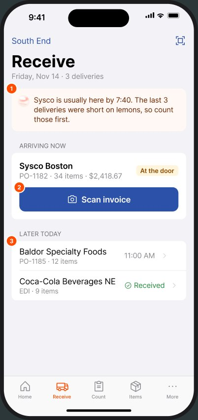
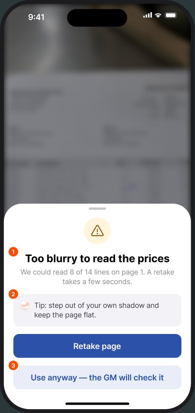
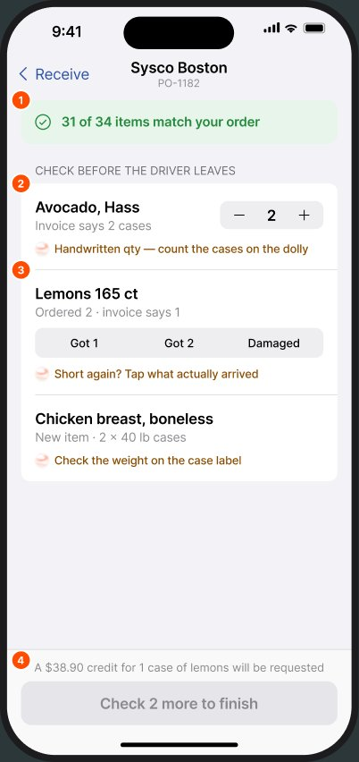

Plus offline, camera access off, short delivery with a credit request, and receiver-can’t-approve states in the Figma file.
One number both the operator and Toast care about.
Time from invoice received to bill in the books
Captures capture speed, review effort and sync health in one measure the GM can feel.
— excluding invoices on hold with the supplier
baseline first, then set the target
Lines with no human touch
Share of lines matched and approved without an edit.
Edits per invoice
And the re-check rate of “exact” matches.
Undo after approval
Trust guardrail: should stay low as automation grows.
Sync failures
Per week, and time to fix. Business: add-on attach and retention.
0 automated issues
Audited with axe-core: contrast, names, keyboard, focus, 24px targets, dialogs and reduced motion.
Components in Figma
Buttons, pills, nav, cards and the Toast IQ orb as variants. In production I’d build on Toast’s own system.
Laptop first
Review cards restack at 1280px; below 1100px the decisions move above the invoice paper.
Thought through, not yet built.
These didn’t fit in the weekend timeline. I love going deep on flows like these, and they’re the ones I’d take on next.
Supplier setup & field mapping
Connect a distributor, preview incoming fields, and match unknown codes with the same evidence panel.
Supplier record
Terms, delivery days, channel and price history, so every price change has context.
Moving customers onto the new platform
What moves, what matched automatically, and a review queue using the same needs-you / ready pattern.
Retail-only workflows
UPC-first matching, and converting cases to single units for bottle shops and grocery.
Item creation & catalog management
How the catalog gets built in the first place, and kept clean across locations.
Test with real operators
Sessions with restaurant and retail managers and Toast support, using their own invoice types.
See it working.
Start with the inbox, review Sysco, map the chicken, fix the sync, and ask Toast IQ what’s left before tonight. Best viewed on desktop.
I’d love to walk you through my thought process, the research and the Figma file (desktop, mobile and design system), and the other flows if we get the chance.